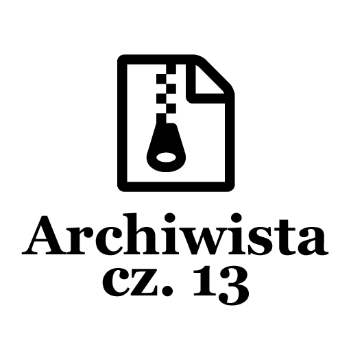

Post archive
Archiwista [cz. 13 - Kończenie aplikacji]

W tym tygodniu skupiłem się głównie na dokańczaniu aplikacji. Aplikacja jest w pełni sprawna. Co prawda nie zostały zrobione wszystkie rzeczy, które bym chciał mowa tutaj o zaawansowanym tworzeniu kopii zapasowych, ale nie przeszkadza to w jej użytkowaniu.
Zmiany
Postanowiłem pozbyć się zakładki Report, gdyż aplikacja jest przeznaczona dla osób umiejących programować. Z pewnością znajdą inną drogę, aby poinformować mnie o zaistniałym błędzie.
Przejrzałem również całą aplikację w poszukiwaniu napisów wpisanych na sztywno i dodałem je do słownika. Dzięki czemu istnieje łatwa możliwość zmiany jakiegokolwiek napisu w całej aplikacji.
Porzuciłem pomysł na przewijanie dodanej ścieżki na jej koniec. Celem tej operacji było pokazanie końcówki, aby użytkownik mógł zweryfikować czy wybrał dobrą ścieżkę. Zamiast tego dodałem Tooltip, który wyświetli całą ścieżkę po najechaniu na pole tekstowe. Wydaje mi się, że to rozwiązanie jest lepsze niż konieczność przewijania ścieżki.
Styl przycisków
W zeszłym tygodniu wspominałem o konieczności sygnalizacji o dokonanych zmianach w zakładce z ustawieniami. Bez tego użytkownik nie wie, czy wprowadził już jakieś zmiany i musi je zapisać, czy też odrzucić. Napotkałem tutaj problem. Aktualnie każdy przycisk posiada animację, która sygnalizuje najechanie na niego poprzez zmianę tła na jaśniejsze oraz gdy użytkownik opuści pole przycisku wygaszenie tła. Cały proces ma na celu umilenie korzystania z aplikacji.
Sygnałem, jakim chciałem przekazać informacje o zmianie jest wyłączenie przycisku zapisu oraz odrzucenia. Niestety podczas implementacji napotkałem problem. Przyciski, kiedy nie wykryto zmian w ustawieniach pozostają wyłączone poprzez właściwość IsEnabled. Gdy użytkownik najedzie na przycisk w celu odrzucenia zmian. Wciśnie go, przycisk zmieni swój wygląd na wyłączony, ponieważ nie ma już zmian, które mógłby odrzucić. Niestety, kiedy użytkownik zabierze kursor z przycisku, mimo iż przycisk jest wyłączony wywoła się animacja wygaszania tła zmieniając tło na niebieskie. Znalazłem częściowe rozwiązanie. Jest nim ustawienie FillBehavior na Stop dzięki temu animacja nie nadpisze wartości koloru tła. Niestety nie zmienia to faktu, że animacja się wykona i przez okres jej działania będziemy widzieć zmieniający się kolor. Aby tego uniknąć ustawiłem czas animacji na bardzo krótki, przez co nie widać przejścia animacji. Wygaszenie koloru od teraz na każdym przycisku następuje gwałtownie bez płynnego przejścia.
Rozwiązaniem, które może się sprawdzić to ValueConverter, który po podaniu czy przycisk jest w trybie edycji, będzie zwracał odpowiednią szybkość animacji 0 sekund lub 0.3 sekudny co teoretycznie rozwiązałoby problem. Niestety to rozwiązanie jest bardzo specyficzne co mnie nie zadowala. W ciągu następnego tygodnia rozważę jeszcze jakieś inne możliwości.
Kończąc
Proces tworzenia aplikacji dobiega końca. Z tygodnia na tydzień jest coraz mniej rzeczy do zrobienia. Głównymi zadaniami do ukończenia aplikacji są: utworzenie ikony aplikacji, przejrzenie całego kodu źródłowego w poszukiwaniu brakujących komentarzy i ewentualnych błędów, wygenerowanie dokumentacji do aplikacji oraz stworzenie landing page przedstawiającego wszystkie funkcjonalności.
[KodNaGit]